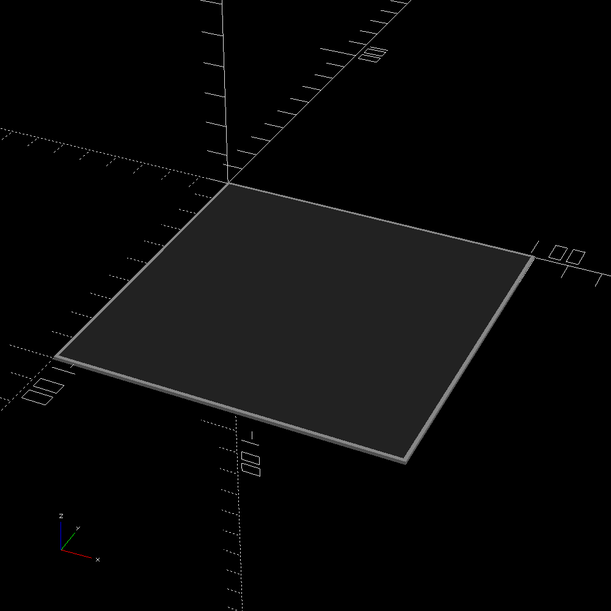
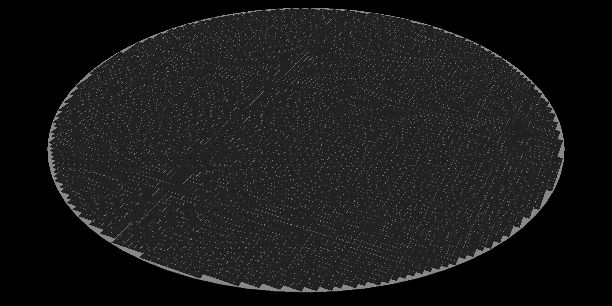

link to this page
Felicity Techtree: Gallium Arsenide photovoltaics
 Gallium Arsenide photovoltaics, as used in the Felicity tech tree, allow ≈40% conversion of sunlight into electrical energy.
They are produced with Ion Beam Printing.
Gallium Arsenide photovoltaics, as used in the Felicity tech tree, allow ≈40% conversion of sunlight into electrical energy.
They are produced with Ion Beam Printing.
They are most commonly used in concentrated solar arrays to decrease the amount of actual photovoltaic surface that has to be printed, as ion beam printing is very costly in both energy in time, but they can also be applied to flexible surfaces.
A document with math behind the technology is here
Standard photovoltaic tile

A tile sized 10cm by 10cm is used as a basic building block for the collectors of concentrated solar arrays and other solar power equipment.
The GaAs photovoltaic portion of the tile can be produced via ion beam printing.
It requires 256.312 mg of Gallium and 275.435 mg of Arsenic for materials, and the printer which takes on average 1470.524 seconds of time and 489 788.257 J of energy to produce the tile.
The casing [todo, figure out what the casing even is, and how it is produced].
Concentrated solar array


The included concentrated solar array uses a parabolic mirror to concentrate sunlight onto a much smaller disk covered with 1861 photovoltaic tiles.
This greatly reduces cost, as the mirror itself is simply made of smooth-polished metal, which is much cheaper (in terms of energy cost) to produce than an equal area of photovoltaics.
In this way solar power can remain viable at great distances such as those of the asteroid belt, but it comes with a downside that the array must be pointed straight at the sun, as even just 10 degrees of angle will move it out of focus and it will stop producing power completely, which stands in contrast with plain photovoltaic panels which will keep producing power as long as they are pointing anywhere within 90 degrees of the sun.
The default concentrated solar array has the following characteristics:
- mirror radius: 50m
- collector radius: 5m
- mass: 610 600 kg
- equivalent to 2892.464356 m2 of a 100% efficient solar collector
And costs the following:
- 610598.475 kg of mixed metal alloy in the mirror and support skeleton
- 7445 photovoltaic tiles
- Varrying cost of time and energy to weld the structure together and polish the mirror
The amount of power produced drops off with the square of distance from the sun.
In practice the array can't produce much more than 266.4 kW of power without additional cooling - 666kW of sunlight concentrated on the collector heats it to the maximum temperature the gallium arsenide solar pannels can reach before the arsenic will simply sublimate out of them.
At that level of insolation the collector would reach 553K, meaning it would be radiating away 416kW of heat, meanwhile 266.4kW of the sunlight gets converted into electricity instead of heat.
For practical purposes 250kW of power output is a safe maximum.